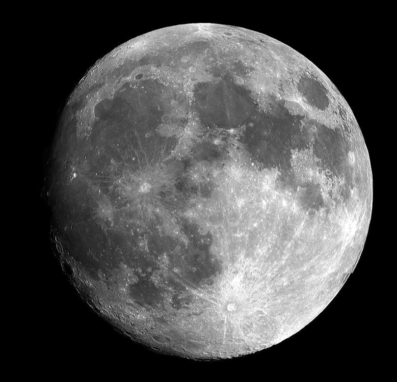

Mars – the fourth planet from the Sun – is a dusty, cold, desert world with a very
thin atmosphere. This dynamic planet has seasons, polar ice caps, extinct volcanoes, canyons and weather.
Mars is one of the most explored bodies in our solar system, and it's the only planet where we've sent rovers to roam the alien landscape. NASA missions have found lots of evidence that Mars was much wetter and warmer,
with a thicker atmosphere, billions of years ago.Mars was named by the Romans for their god of war because its reddish color was reminiscent of blood. The Egyptians called it "Her Desher," meaning "the red one."
Even today, it is frequently called the "Red Planet" because iron minerals in the Martian dirt oxidize, or rust, causing the surface to look red.
Phobos, the innermost and larger moon, is heavily cratered, with deep grooves on its surface. It is slowly moving towards Mars and will crash into the planet or break apart in about 50 million years.
Deimos is about half as big as Phobos and orbits two and a half times farther away from Mars. Oddly-shaped Deimos is covered in loose dirt that often fills the craters on its surface, making it appear smoother than pockmarked Phobos.
Mars has no rings. However, in 50 million years when Phobos crashes into Mars or breaks apart, it could create a dusty ring around the Red Planet.
The Red Planet is actually many colors. At the surface, we see colors such as brown, gold, and tan. The reason Mars looks reddish is due to oxidization – or rusting – of iron in the rocks, regolith (Martian “soil”), and dust of Mars. This dust gets kicked up into the atmosphere and from a distance makes the planet appear mostly red.
nterestingly, while Mars is about half the diameter of Earth, its surface has nearly the same area as Earth’s dry land. Its volcanoes, impact craters, crustal movement, and atmospheric conditions such as dust storms have altered the landscape of Mars over many years, creating some of the solar system's most interesting topographical features.
A large canyon system called Valles Marineris is long enough to stretch from California to New York – more than 3,000 miles (4,800 kilometers). This Martian canyon is 200 miles (320 kilometers) at its widest and 4.3 miles (7 kilometers) at its deepest. That's about 10 times the size of Earth's Grand Canyon.
A large canyon system called Valles Marineris is long enough to stretch from California to New York – more than 3,000 miles (4,800 kilometers). This Martian canyon is 200 miles (320 kilometers) at its widest and 4.3 miles
Mars is home to the largest volcano in the solar system, Olympus Mons. It's three times taller than Earth's Mt. Everest with a base the size of the state of New Mexico.
Mars has a thin atmosphere made up mostly of carbon dioxide, nitrogen, and argon gases. To our eyes, the sky would be hazy and red because of suspended dust instead of the familiar blue tint we see on Earth. Mars' sparse atmosphere doesn't offer much protection from impacts by such objects as meteorites, asteroids, and comets.
The temperature on Mars can be as high as 70 degrees Fahrenheit (20 degrees Celsius)
or as low as about -225 degrees Fahrenheit (-153 degrees Celsius). And because the atmosphere is so thin, heat from the Sun easily escapes this planet.
If you were to stand on the surface of Mars on the equator at noon, it would feel like spring at your feet
(75 degrees Fahrenheit or 24 degrees Celsius) and winter at your head (32 degrees Fahrenheit or 0 degrees Celsius).
Mars has no global magnetic field today, but areas of the Martian crust in the southern hemisphere are highly magnetized, indicating traces of a magnetic field from 4 billion years ago.The temperature on Mars can be as high as 70 degrees Fahrenheit (20 degrees Celsius) or as low as about -225 degrees Fahrenheit
Earth's only natural satellite is simply called "the Moon" because people didn't know other moons existed until Galileo Galilei discovered four moons orbiting Jupiter in 1610. In Latin, the Moon was called Luna, which is the main adjective for all things Moon-related: lunar. FEATURED VIDEO Moon Phases 2024 This visualization shows the Moon's phase at hourly intervals throughout 2024, as viewed from the Northern Hemisphere. About Moon Phases 